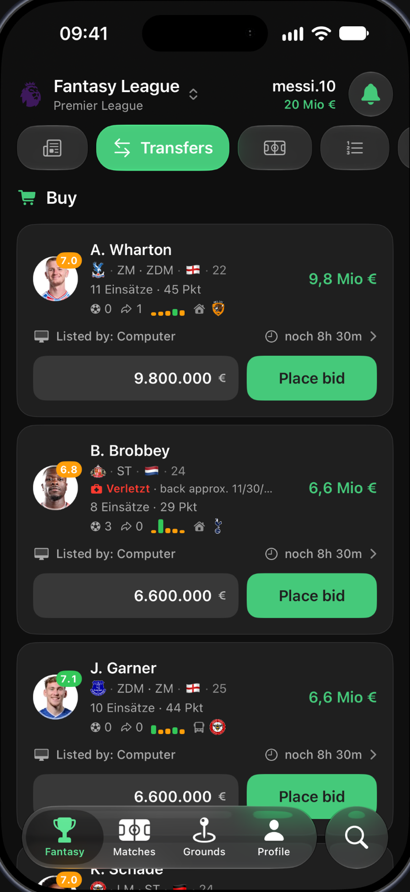
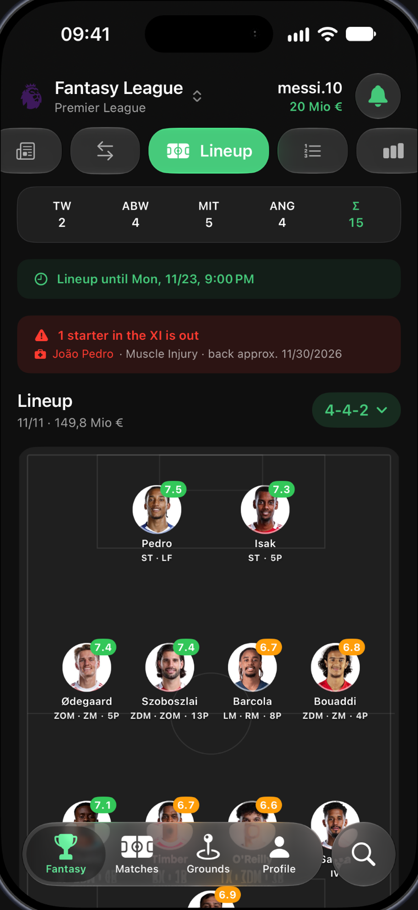
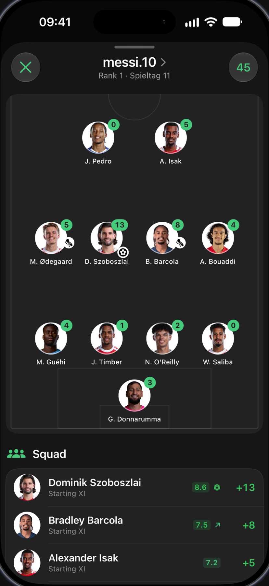
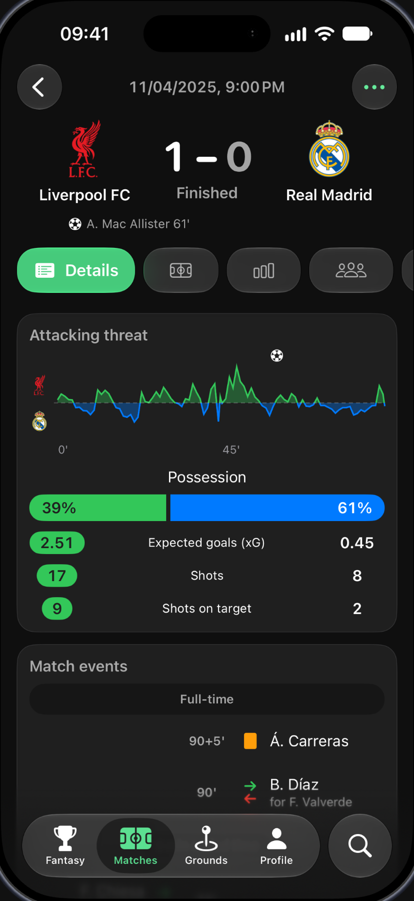
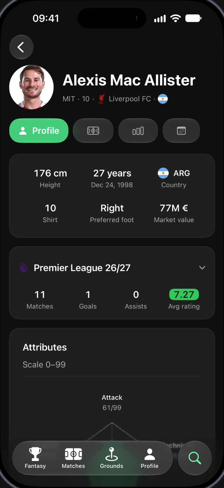
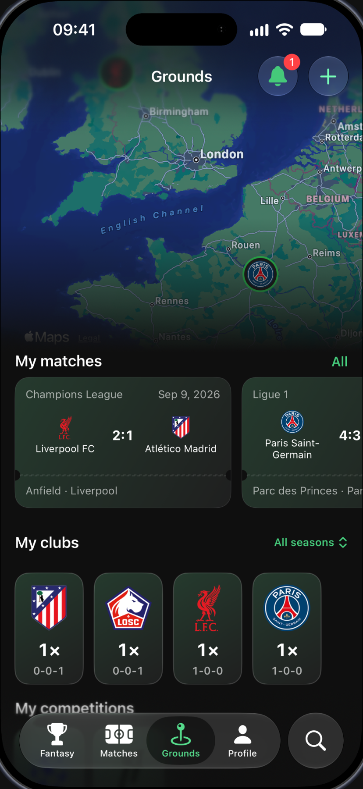

Invite
Create a league and bring your friends in with an invitation code.
Start a private league, compete for players and pick your starting XI. Follow every match live, dig into player and club stats and keep a diary of the grounds you’ve been to.


Share an invitation, build your squad and follow the next matchday. Everything you need to run a league with your friends.
Create a league and bring your friends in with an invitation code.
Sign players, manage your budget and choose who makes your XI.
Earn points from real matches and see who takes the lead in your league.
Bid on players, sell from your squad or make a direct offer to another manager. Goals, assists, rating trend and injury status show you who is worth the money.
Choose a formation and fill your eleven positions before kickoff. If a starter is injured, the app tells you, including the expected return date.
Goals, assists, cards and ratings from real matches turn into points. The table shows rank movement and matchday wins. Tap a manager to see their lineup and points for the matchday.

Matchday XI also follows the real thing: live matches, detail pages for players, clubs and competitions, and a diary of the stadiums you’ve visited.
Follow scores and goalscorers live, grouped by matchday. The match center shows attacking threat, possession, expected goals, both lineups with events and player ratings.

Player pages cover the whole season with a season filter, all stat sections, rating trend, a shot map with average position and injuries with the expected return. Clubs and competitions get their own pages too.

Keep a private diary of the matches you’ve watched in the stadium. Collect grounds on the map, see your record by club and competition and add photos to each visit.

One person creates the league and shares the invitation code. Everyone else joins with their own account. Depending on the settings, an admin may need to approve each request.
Yes. When creating a league, you choose from the available league and scoring settings. You can check the rules that apply inside your league.
Scoring is based on real football matches. Match events and ratings are converted into points using your league’s rules. Data may arrive with a delay or be corrected later.
Your private stadium diary. Log the matches you’ve attended, collect stadiums on the map and see your record by club and competition. Only your account can see your visits and photos.
Only if you allow it. For the stadium check-in and matches near you, your location is compared with the stadium on your device and is not stored or sent to us. Finding visited matches from your photos compares their time and place on your device; the photos are not uploaded. Details are in the privacy policy.
Sign-in, bids, league changes and current scores require a connection. Some content you have already loaded may remain available offline.
Yes. Both permissions are optional and initially disabled. You can manage the separate switches under Profile → Privacy and withdraw either choice at any time.
Now. Matchday XI is available on the App Store for iPhone and iPad.
Matchday XI is now available for iPhone and iPad. Questions? We’re happy to help by email.